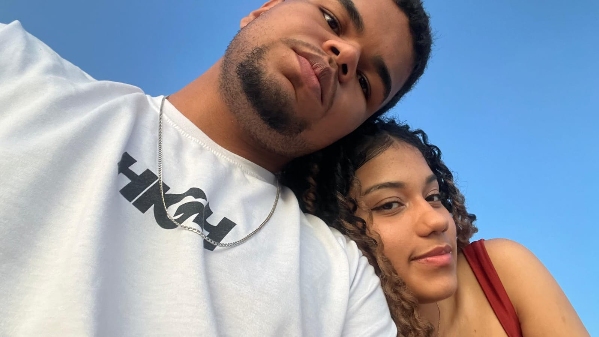
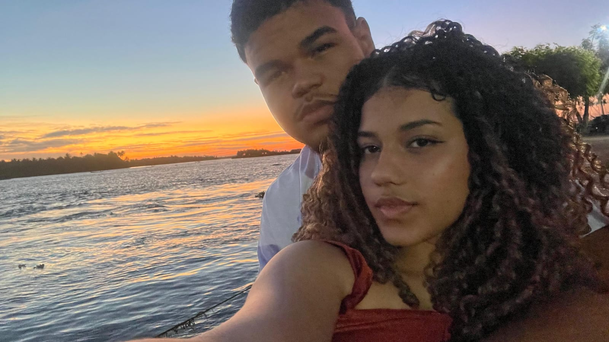
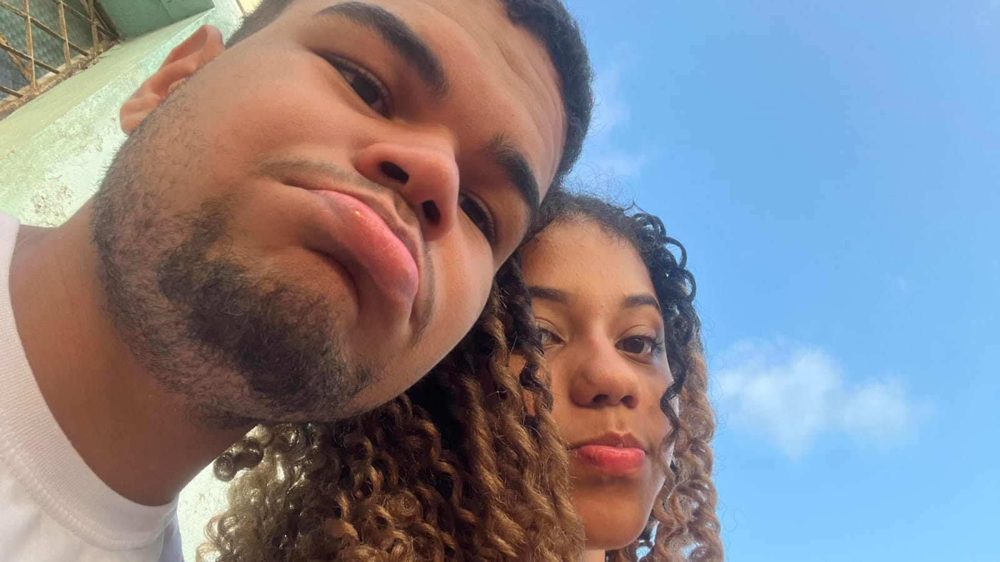
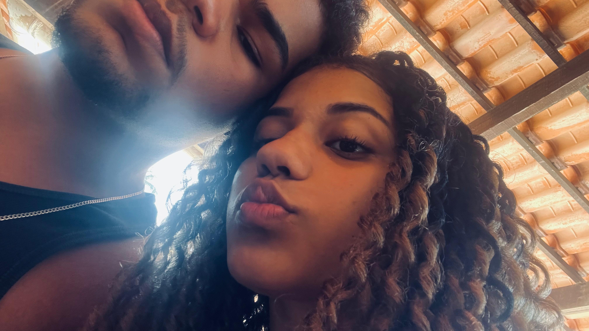
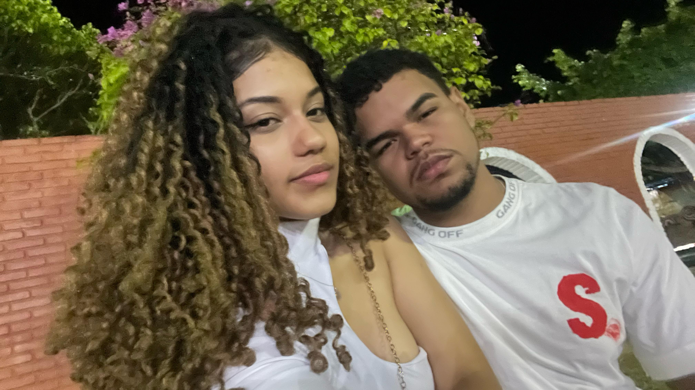

Ah, meu amor, quis falar sobre nós, né? A gente se conheceu aqui na Toda Bela e, desde então, nunca deixamos de conversar um único dia sequer. Foram incontáveis trocas de mensagens, risadas e momentos compartilhados. Você chegou na minha vida de um jeito que eu nunca esperava. Nunca imaginei que conheceria alguém assim, muito menos que me apaixonaria tão profundamente. Mas hoje, sou completamente apaixonado por você.
Em tão pouco tempo, você se tornou uma das maiores prioridades da minha vida. Sempre me tratou da maneira que eu sempre quis ser tratado, de um jeito que eu já havia até desistido de encontrar. Mas você veio e me mostrou que o amor verdadeiro existe, que eu posso ser amado de uma forma sincera e especial.
Hoje, eu sei que nada pode me fazer desistir de você. A única pessoa que poderia me afastar de você é você mesma. Mas nos amamos tanto que acho difícil que um de nós cometa um erro tão grande a ponto de machucar o outro dessa forma. Até porque, eu preferiria me machucar do que te machucar.
Amo passar minhas horas vagas com você, amo conversar com você o tempo todo. Se eu pudesse passar 24 horas ao seu lado, eu passaria sem hesitar. Sinceramente, não consigo me imaginar vivendo minha vida ao lado de outra pessoa que não seja você. Meu maior desejo é passar o resto da minha vida contigo, construir uma família ao seu lado, ter filhos com você. Porque, se não for você a mãe dos meus filhos, então não será mais ninguém. Jamais permitiria que outra pessoa herdasse os olhos tão lindos pelos quais me apaixonei.
Você é, de fato, a mulher da minha vida. E eu estou disposto a deixar tudo para trás, a mudar de cidade para morar ao seu lado. Passei quatro dias construindo este site para você. Comecei na manhã de segunda-feira e agora já é quarta-feira, 4h35 da manhã, e ainda estou finalizando. Mas cada segundo de esforço valeu a pena, porque você merece toda a minha dedicação, todo o meu amor.
Não há um único dia em que eu não sinta sua falta. Não há um único dia em que eu não deseje estar com você. Toda terça e sexta-feira, penso que, se você estivesse aqui, a gente se veria. Mas logo, muito em breve, estaremos juntos. E, quando isso acontecer, não haverá mais distância, nem despedidas. Moraremos juntos, construiremos a nossa vida lado a lado. Eu terei você só para mim, poderei dormir ao seu lado e realizar todos os sonhos que sempre tive com você.
Eu te amo, meu amor. Te vejo em breve… 💖